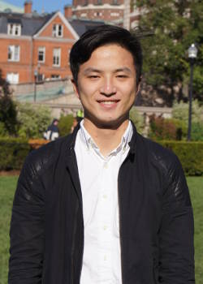

Executive Board |
Millie Nishikawa CC'16 President |
Frank Zhong CC'17 Vice President (Columbia) |
Mariko Kanai CC'17 Secretary |
Linda Wang CC'16 Treasurer |
Yumiko Shime BC'17
Vice President (Barnard)
ECMs (Executive Committee Members)
Tom Borgers CC'16 |
 Emily Meng SEAS'17 |
Steffany Moreno CC'17 |
Wang Zi BC'17 |
|
Rachel Shi CC'17 Sayaka Tsuno BC'15 Joe Zhou SEAS'15 |
OCMs (Organizational Committee Members)
Eileen Ai |
Michael Choi |
Ayano Kase |
Bryan Louie |
Nicole Valencia |
Srikar Varadaraj |
Alex Wang |
 Yang Xiong |
Nina Xu |
Joseph Yoon |
Francois Yoshida-Are |
George Yu |
Randy Zhong |
Senior Advisors |
Affiliations
Columbia University, Barnard College, Weatherhead East Asian institution, Donald Keene Center
Show Some Love
Copyright 2015 Columbia Japan Society. Site maintained by Leon An